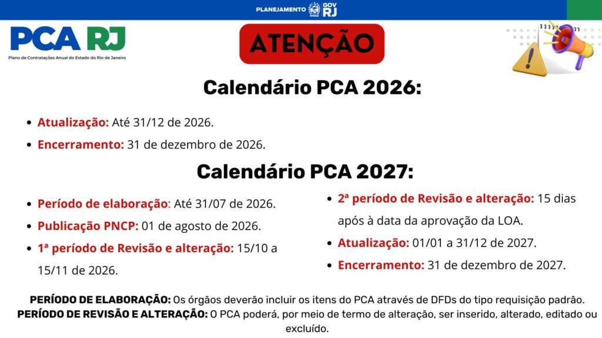

SISTEMA PCA RJ
Plano de Contratações Anual • Base de Conhecimento REDELOG RJ
O Sistema PCA RJ é uma ferramenta informatizada desenvolvida para prestar apoio ao processamento e operação do Plano de Contratações Anual do Estado do Rio de Janeiro, oferecendo, ainda, ao gestor a visualização global dos serviços e materiais com maior impacto no âmbito de sua organização.
Calendário do PCA
Gestor, atenção ao calendário do PCA 2026 e PCA 2027, de acordo com o Decreto nº 49.129 de 05 de junho de 2024:

Acesso e Suporte ao Sistema
Sistema PCA RJ
Acesse o ambiente oficial informatizado para envio de DFDs, confirmação, validação pelo Gestor Setorial e aprovação de itens pelo Ordenador de Despesas.
Suporte Logístico
Dúvidas operacionais, cadastro de usuários ou problemas no uso do sistema? Abra um chamado diretamente no canal de atendimento do Compras RJ.
Apresentação do Sistema PCA RJ
Acesse a apresentação simplificada do Sistema PCA RJ com o calendário atualizado e conheça mais sobre a ferramenta!
Manuais do Sistema PCA RJ
Consulte e baixe as edições oficiais e atualizadas dos manuais técnicos para cada perfil e etapa de operação no sistema:
Manual sobre o Documento de Formalização de Demanda
Orientações para o setor demandante cadastrar, preencher e importar demandas no Sistema PCA RJ.
Manual Sobre Cadastro de Usuários
Instruções passo a passo para atribuição de perfis, permissões e vinculação de operadores setoriais.
Manual Sobre a Aprovação de Itens
Guia exclusivo para o Ordenador de Despesas analisar, deferir ou solicitar ajustes nos itens consolidados.
Manual Sobre Unidades e Setores
Mapeamento hierárquico e estruturação das Unidades Gestoras (UGs) e setores internos da organização.
Manual Sobre a Validação de Itens
Procedimentos para o Gestor Setorial da REDELOG conferir, filtrar e validar as demandas antes da aprovação final.
Vídeos Tutoriais
Acompanhe os tutoriais em vídeo preparados pela equipe da REDELOG e SEPLAG-RJ com capacitações práticas sobre a operação do Sistema PCA RJ:
Canal Oficial da REDELOG no YouTube
Acesse a playlist completa com orientações em vídeo sobre login, cadastramento de DFDs, importação de planilhas e fluxo de validação.
FAQ PCA
Tire suas dúvidas sobre a operacionalização, perfis, integrações e prazos do Plano de Contratações Anual:
Se necessário, os órgãos e entidades poderão promover atualizações no plano.
É possível ser demandante, confirmador, validador e aprovador de mais de uma UG. Assim como é possível ser demandante e confirmador de uma mesma UG, em setor diferente. Pode haver mais de um demandante, confirmador, validador e aprovador por UG.
O Gestor Setorial da REDELOG é o gerenciador do PCA no âmbito de cada órgão e entidade. Ele e o Ordenador de Despesas são os responsáveis por coordenar e visualizar as ações do PCA através do Sistema e de fazer a condução interna dentro da sua organização.
O REDELOG Central tem acesso à elaboração do PCA de outros órgãos, mas não tem controle sobre as unidades.
O PCA 2025 já se encontra publicado no PNCP, em caso de alteração, a nova publicação ocorre até o dia posterior da alteração realizada. O PCA 2026 será disponibilizado no Portal Nacional de Contratações Públicas (PNCP) em 01 de agosto de 2025.
O suporte às atividades será virtual, tendo, em casos específicos, o suporte presencial.
O plano é publicado no Portal Nacional de Contratações Públicas automaticamente pelo sistema PCA.
Não há período de espera para fazer atualização ou alteração do plano, observadas as datas do calendário previsto no Decreto nº 49.129/2024.
O validador é o Gestor Setorial da REDELOG podendo, também, ser atribuído a outros servidores, nos seguintes casos: quando houver duas ou mais unidades gestoras vinculadas ao mesmo órgão ou entidade; ou quando houver necessidade de mais de um validador no âmbito do órgão ou entidade, mediante justificativa do Titular no ofício de que trata o § 2º do art. 23 do Decreto 48.760/2023.
Sim. Cada órgão terá o(s) seu(s) Gestore(s) Setorial da REDELOG, os quais, no âmbito do Sistema PCA RJ, terão a função de usuário validador. A UG pode cadastrar mais de um validador.
O aprovador é o Ordenador de Despesa.
O órgão ou entidade demandante terá que solicitar a catalogação do material ou serviço no âmbito do Catálogo de Materiais e Serviços do Sistema SIGA.
Por ora o PCA está integrado com PNCP para a publicação e atualização deste e ao Catálogo de Itens do SIGA para a escolha dos itens no DFD.
Sim. O PCA é sempre planejado para o exercício subsequente.
As secretarias e entidades deverão instruir processo administrativo, mediante o tipo denominado no Sistema Eletrônico de Informações SEI “Logística: Plano de Contratação Anual”, para a execução e acompanhamento dos procedimentos do PCA, no ano anterior ao exercício a que se refere. Logo, o procedimento do PCA para o ano X+1 será iniciado no ano X.
O Sistema PCA RJ não limita o número de setores e usuários por pasta.
A operacionalidade sobre a importação dos arquivos de planilhas está descrita no manual sobre DFD disponibilizado.
O Sistema PCA RJ não limita o número de usuários demandantes por pasta. Essa organização fica a cargo de cada órgão ou entidade. A operacionalidade sobre a criação de usuários demandantes em vários setores da mesma unidade estão descritas nos manuais disponíveis no Sistema PCA RJ.
O planejamento orçamentário está dissociado do logístico neste primeiro momento. O PCA é um documento de governança logística promovido de forma apartada do Projeto de Lei Orçamentária – PLOA nesta primeira elaboração sob o novo formato. Contratos em vigência ficam fora do PCA, devendo constar as novas contratações ou prorrogações. Porém, as informações do PCA deverão ser compatíveis com aquelas previstas no PLOA/LOA para o exercício a que se refere, de modo a garantir o alinhamento das informações logísticas e orçamentárias.
Sim.
Não. Somente no PNCP.
Os valores inseridos serão sempre em Real (R$), no caso de uma futura contratação, de produto, equipamento ou material importado, esse valor deverá ser convertido em real.
O relatório está disponível para emissão diretamente no sistema. Ao acessar o sistema PCA, clique na opção PCA no menu superior, busque sua unidade e acesse os itens do seu PCA. Na parte inferior da tela, estará a opção: Gerar relatório.
Não. Apenas se for realizada a prorrogação desse contrato na vigência do exercício subsequente.
Sim. E no campo valor PLOA, deve ser inserido o previsto para ser executado em 2025.
Conforme previsto no Decreto nº 49.129/2024, o Órgão Central do Sislog publicou a Resolução SEPLAG Nº 324/2024 que indica os elementos de despesa que deverão ser obrigatoriamente registrados no PCA, assim como as exceções.
Às contratações que não impliquem em despesa a ser empenhada, apesar de não estar disponível indicação de tratamento a ser conferido a estes casos nos normativos vigentes, de forma expressa, aplica-se entendimento idêntico ao já previsto em publicações anteriores, notadamente as Resoluções SEPLAG nº 60, de 24 de junho de 2021 (art.1 º, §4º), e nº 122, de 02 de maio de 2022 e (art.5 º, § 4º), que dispensavam do PCA “as contratações que não impliquem em despesa a ser empenhada”.
Não pertence à estrutura do Governo do Estado do RJ e quer utilizar o Sistema PCA RJ?
Gestor, leve o Sistema PCA RJ para sua instituição e garanta os benefícios da ferramenta!
Entre em contato!